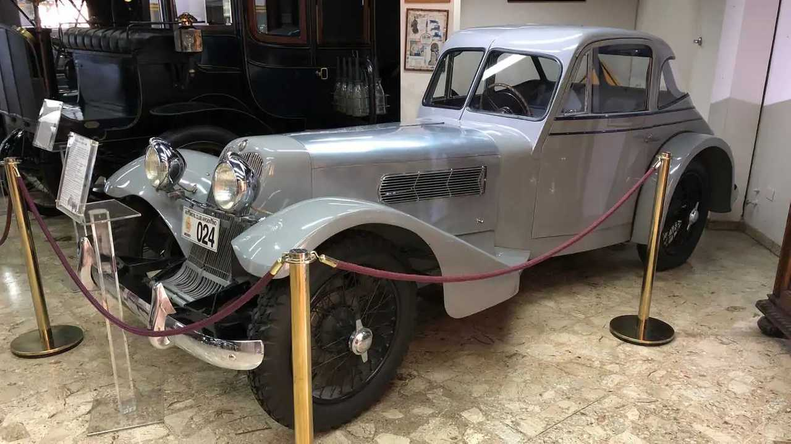
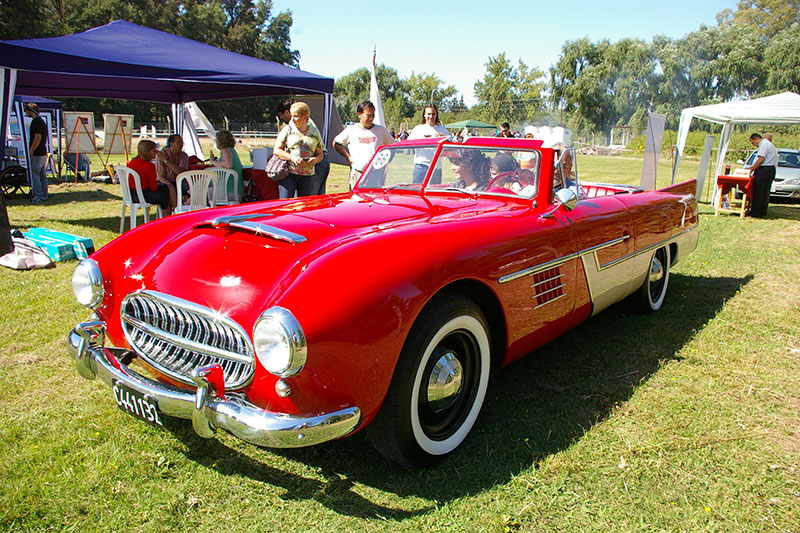
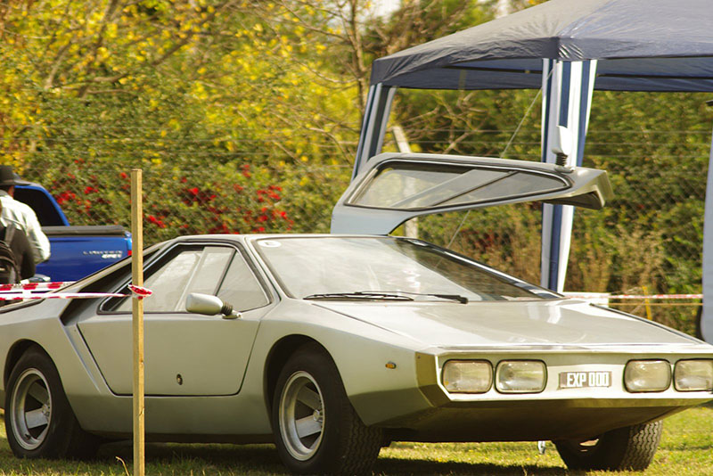
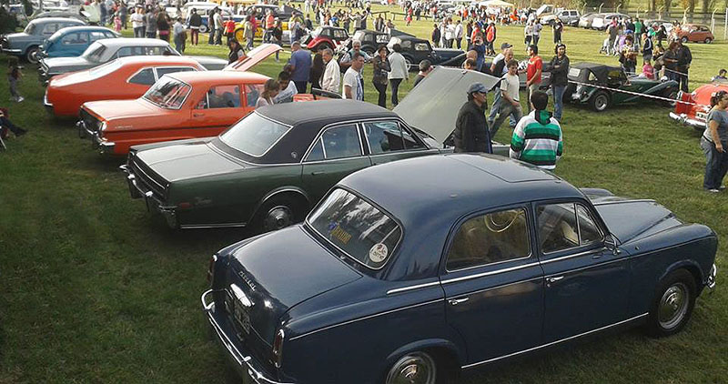
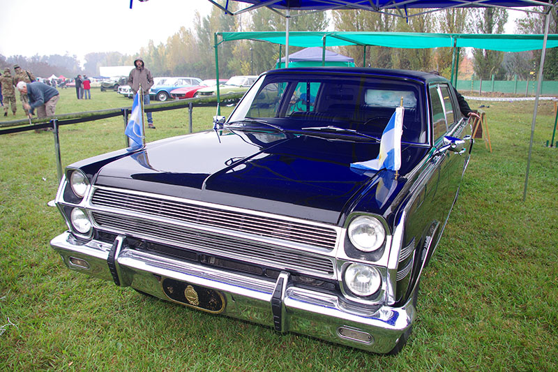
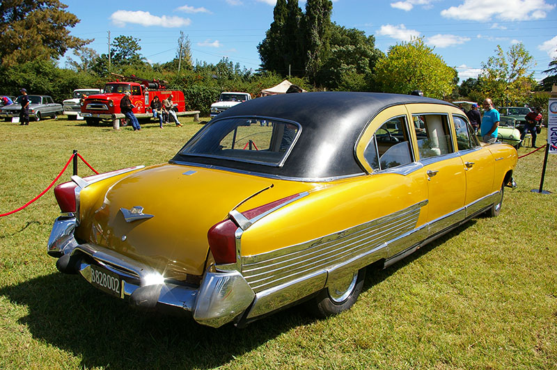

Bienvenidos al lugar de los Autos Clásicos






Hola éste sitio ésta dedicado a los Autos Clásicos, encontrarás información acerca de los autos más famosos en la Historia de los automóviles.
Desde aquí podras acceder a la información del Auto que más te interese, como ser Imágenes, Características más sobresalientes y mucho más.
También podrás saber en que año salieron al mercado cada uno de ellos.